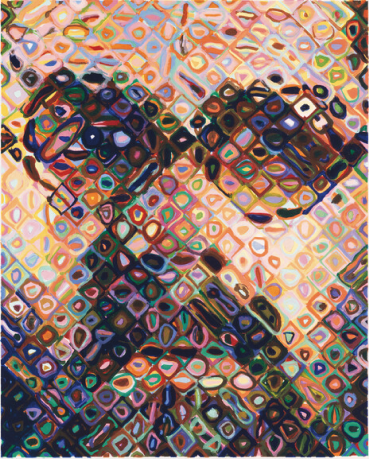
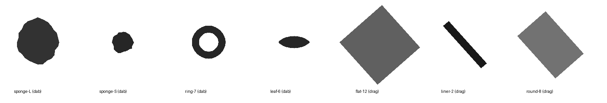

"Reads as image" is a blurred difference to the JAX composite. It's a sanity check, not the goal; lower means closer.
Placeholder tool library

Digital stand-ins. Real footprints come from scanning one dip of each of your tools; density and prints-per-dip come from the same test sheet.